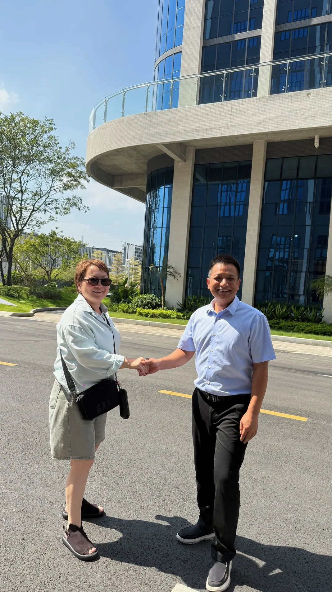
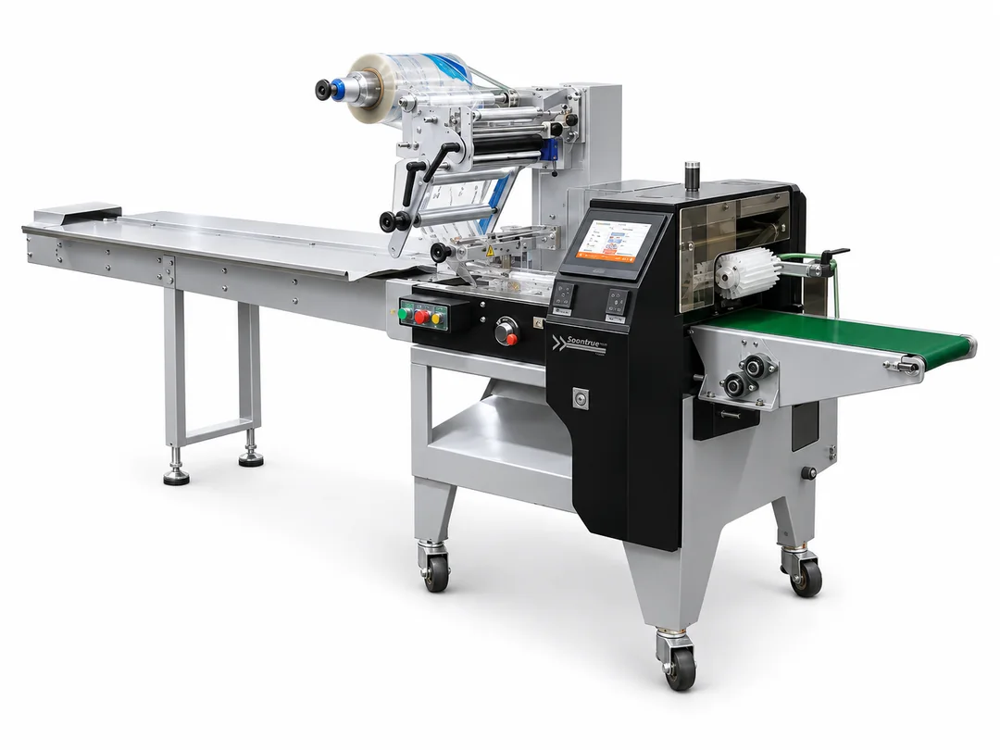
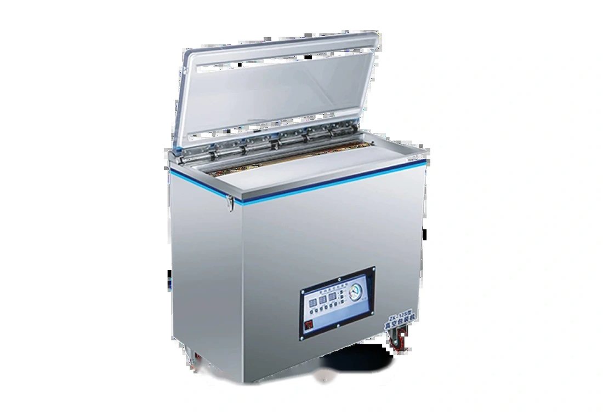
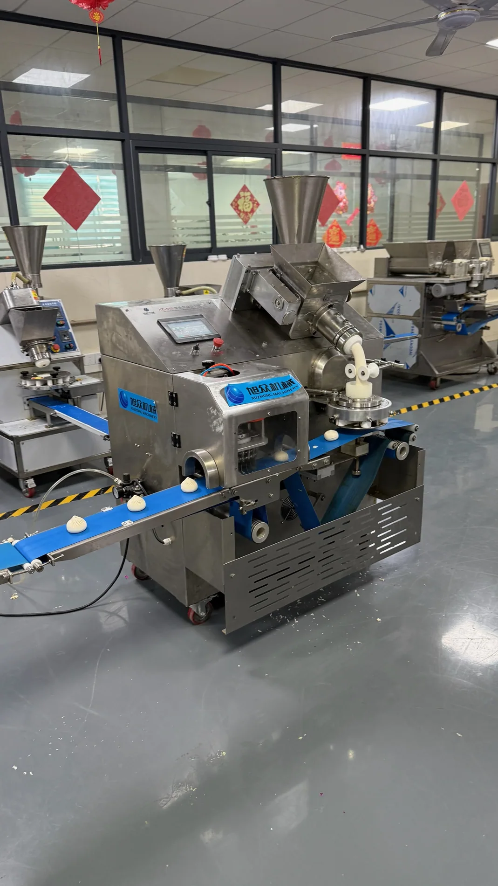

Нужно быстрее фасовать продукт
Например, крупы, снеки или замороженные полуфабрикаты. Разберём вид дозатора, упаковку, вес порции и нужную скорость.
Смотреть варианты упаковки ↗Расскажите, какой продукт выпускаете, в какой упаковке хотите его продавать и сколько нужно производить. Мы поможем выбрать подходящие машины и уточним детали напрямую у производителей в Китае.

НАШИ ПОЕЗДКИ · КИТАЙ Личные встречи с заводамиНе только каталоги: смотрим производство и общаемся с людьми на месте.Смотреть фотографии ↗У нас не только каталоги и переписка: команда DARKHANTECH бывала на предприятиях ASTAR и Teemyeah, знакомилась с машинами на выставке в Шэньчжэне. Показываем настоящие фотографии, чтобы было понятно, с кем вы будете работать.


Подберём машину под ваш продукт, объёмы и формат упаковки. Ниже — реальные модели из каталогов производителей, без лишней графики.

Комплекс для дозирования сыпучих продуктов и формирования готовых пакетов.
Смотреть оборудование
Для штучных изделий в рулонной плёнке. Размер упаковки и скорость подбираем под продукт.
Смотреть оборудование
Машины для вакуумной упаковки пищевой продукции; размер камеры подбирается под задачу.
Смотреть оборудованиеНа снимках — конкретные предприятия и реальные встречи. Во время подбора оборудования важно знать, с кем можно обсудить материалы, комплектацию, условия проверки и дальнейшую поддержку.



Это фотографии поездок и встреч команды DARKHANTECH, а не фотографии выполненных поставок клиентам. По каждой выбранной модели отдельно уточняем доступность, комплектацию, условия испытаний и сервиса.
Больше фотографий из наших поездок ↗Наш главный фокус — фасовка и упаковка. Также подбираем машины для полуфабрикатов, овощей и мяса, пекарен.
 01 / 04
Фасовка и упаковкаЛоточная запайка, вакуум, дозирование и упаковочные машиныВиды оборудования и подбор ↗
01 / 04
Фасовка и упаковкаЛоточная запайка, вакуум, дозирование и упаковочные машиныВиды оборудования и подбор ↗
 02 / 04
ПолуфабрикатыПельмени, буузы, манты, котлеты и изделия из тестаВиды оборудования и подбор ↗
02 / 04
ПолуфабрикатыПельмени, буузы, манты, котлеты и изделия из тестаВиды оборудования и подбор ↗
 03 / 04
Овощеподготовка и мясопереработкаМойка и нарезка овощей, мясорубки, фаршемесы и куттерыВиды оборудования и подбор ↗
03 / 04
Овощеподготовка и мясопереработкаМойка и нарезка овощей, мясорубки, фаршемесы и куттерыВиды оборудования и подбор ↗
 04 / 04
Пекарни и кондитерскиеТестомесы, печи, тестораскатки и формовщикиВиды оборудования и подбор ↗
04 / 04
Пекарни и кондитерскиеТестомесы, печи, тестораскатки и формовщикиВиды оборудования и подбор ↗
Необязательно знать название оборудования. Важно понять, какой продукт вы выпускаете и что хотите улучшить.
Например, крупы, снеки или замороженные полуфабрикаты. Разберём вид дозатора, упаковку, вес порции и нужную скорость.
Смотреть варианты упаковки ↗Посмотрим тип лотка и плёнки, требования к герметичности, производительность и способ подачи продукта.
Посмотреть виды машин ↗Уточним размер изделия, свойства теста и начинки, форму и плановый выпуск — эти детали влияют на выбор аппарата.
Оборудование для полуфабрикатов ↗Разберём этапы подготовки овощей или мяса, объём сырья, требования к чистке и возможности вашего цеха.
Машины для подготовки сырья ↗«Дархан» — связь с традицией кузнечного мастерства, уважением к труду и ответственности за результат. В современной работе это означает сначала понять задачу производства, затем сравнить технологические решения и только потом обсуждать закупку.
История DARKHANTECH ↗Эржена отвечает за бизнес-логику проекта: цели автоматизации, затраты, эффективность. Юмжана — за коммуникацию с китайскими производителями, параметры предложений и условия закупки.
 Эржена Бадураева13 лет в бизнесе · КПК «Кредит-Партнер» · NomadsВ DARKHANTECH: задачи модернизации, экономика проекта и приоритеты автоматизации.
Эржена Бадураева13 лет в бизнесе · КПК «Кредит-Партнер» · NomadsВ DARKHANTECH: задачи модернизации, экономика проекта и приоритеты автоматизации. Юмжана БалдановаКитайский язык · закупки · переговоры с заводамиВ DARKHANTECH: поиск и коммуникация с производителями, сверка ТЗ и условий.
Юмжана БалдановаКитайский язык · закупки · переговоры с заводамиВ DARKHANTECH: поиск и коммуникация с производителями, сверка ТЗ и условий.Начинаем с вашего продукта и задачи. Потом сравниваем машины, обсуждаем детали с заводом и считаем реальную стоимость.
Продукт, объёмы, сырьё, ограничения производства.
Показываем разные варианты и объясняем их отличия.
Уточняем, как машина работает, что входит в поставку и как устроена поддержка.
Учитываем оборудование, доставку и дополнительные расходы.
До заказа выясняем условия установки, обучения и сервиса.
Покупка оборудования — только часть проекта. До заказа важно понять, кто будет на связи, как подготовить цех и куда обращаться по вопросам запуска и обслуживания.
Участие инженеров, монтаж, пусконаладка, гарантия и сервис зависят от конкретной модели и согласованных условий. Все договорённости важно закрепить до покупки.
Технологии и оборудование, деловая среда Китая и адресный поиск поставщиков.
Подбор оборудования под продукт, сырьё и производительность.
Подробнее ↗02 / EXPEDITIONSЗаводы, отраслевые выставки и профессиональное окружение.
Подробнее ↗03 / SOURCINGСравнение вариантов и предметные переговоры с производителями.
Подробнее ↗Вот вопросы, которые помогают избежать неподходящей покупки. Это пример подхода к выбору оборудования, а не результаты конкретного клиента.
Продукт, рецептура, сырьё, целевой выпуск, ограничения цеха и критерий качества готового изделия.
Понятно объясняем отличия машин, требования к мойке, переналадке и работе с вашим продуктом.
Фиксируем, что завод подтвердил документами, что требует демонстрации и что необходимо закрепить до договора.
Выпуск, качество, затраты и потенциал масштабирования — в одной модели.
Открыть калькулятор ↗Коротко отвечаем на вопросы, которые возникают у владельцев производств перед покупкой оборудования.
Стоимость зависит от модели, комплектации, требований к продукту и условий поставки. Сначала фиксируем задачу и запрашиваем актуальное предложение производителя.
Сроки зависят от готовности оборудования, изготовления под заказ, логистики и документов. Конкретный график согласуется после выбора варианта.
Возможность испытаний и их формат уточняются у выбранного производителя. Для этого заранее описываем продукт и критерии результата.
Эти условия зависят от производителя, комплектации и договорённостей по конкретному проекту. Их необходимо зафиксировать до закупки.
Достаточно указать продукт, желаемый объём выпуска, вид упаковки или форму изделия и примерный бюджет. Если точных цифр пока нет, начнём с того, что уже известно.
Сравним ограничения модели с вашим сырьём, размером порции и условиями в цехе. При необходимости запросим у завода видео работы или согласуем возможность испытания на образцах.
Что производите, какой объём нужен и что хотите улучшить? Начнём с разговора о продукте и подберём вопросы к производителям.